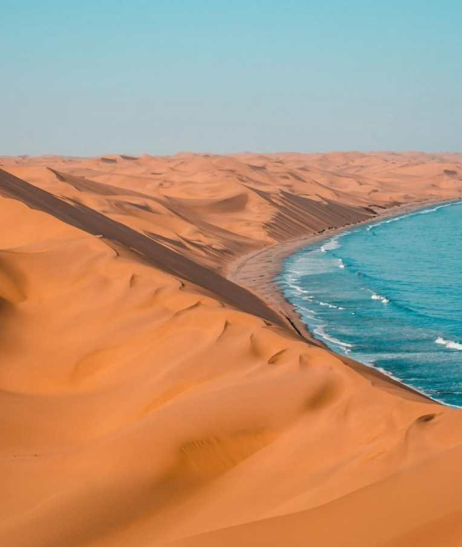
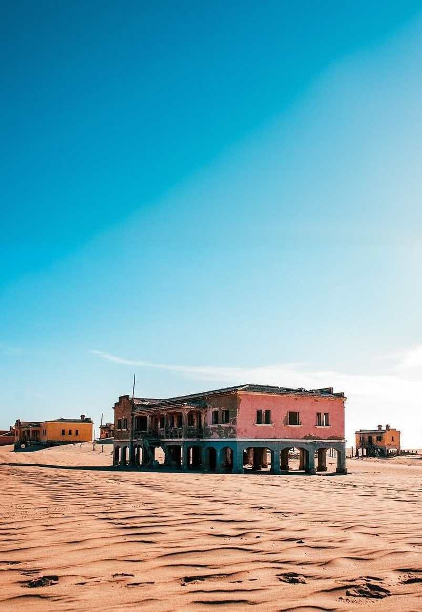
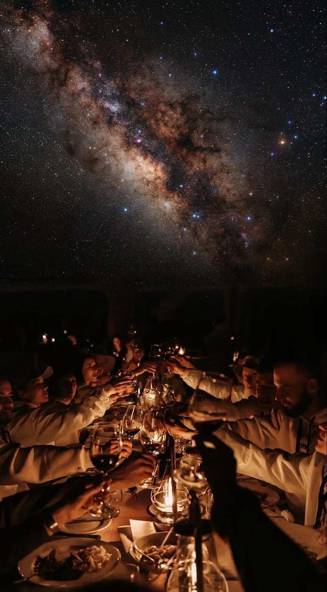
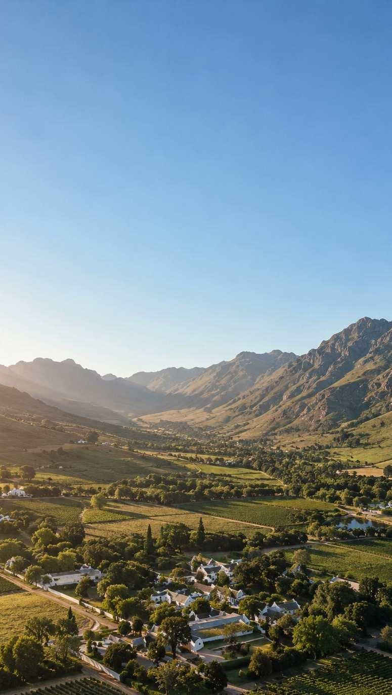
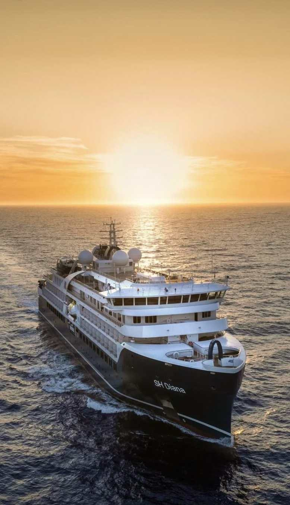
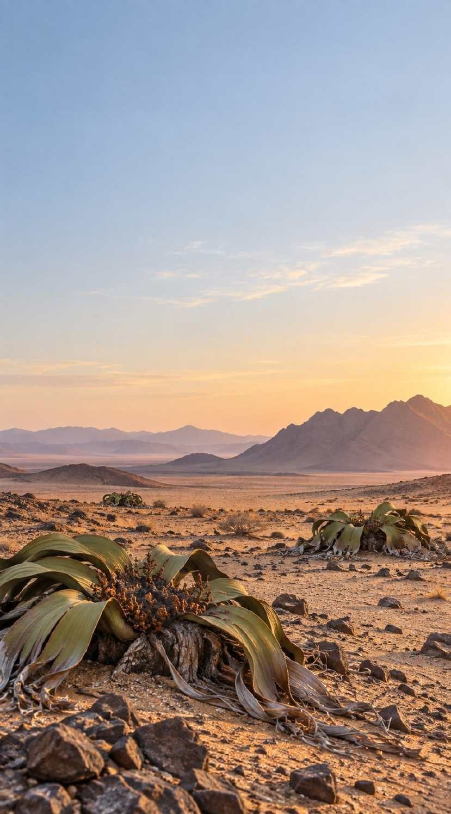

АНГОЛА
Навстречу Намибу
Отправимся вглубь пустыни за вельвичией, увидим каньон Курока-Хиллс и остановимся у оазиса Арка-Лагун.
Ангола · Намибия · ЮАР
Африка. Двенадцать дней
по следам жизни.
Круиз для счастья и новых возможностей
От 35 400 $ за гостя при двухместном размещении
ИДЕЯ ПУТЕШЕСТВИЯ
От Луанды до Кейптауна — навстречу местам, которые заставляют задуматься о времени, и людям, с которыми хочется им делиться.
В пустыне Намиб растёт вельвичия. У неё всего два листа, а возраст некоторых растений превышает тысячу лет. Мы увидим её в Анголе, а затем вернёмся на лайнер, где найдётся время поговорить уже о нашей жизни.
Впервые мы посвящаем целый круиз счастью и активному долголетию. Программу собрали вместе с Филиппом Гузенюком и приглашёнными экспертами. Поговорим о здоровье, психологии, спорте и бизнесе. Из встреч, мыслей и новых мест каждый сложит свою историю.
АНГОЛА · НАМИБИЯ · ЮАР
От пустыни Намиб
до Атлантики —
по следам жизни.
ВПЕЧАТЛЕНИЯ В ПУТИ
Выйти на берег. Оказаться среди пустынных ландшафтов. Вернуться на лайнер и поделиться впечатлениями за ужином.





ЖИЗНЬ НА БОРТУ
Лайнер целиком зафрахтован для сообщества NEVEREND.
После высадки можно вернуться в свою каюту, поужинать и встретиться с друзьями на палубе. А утром выйти на йогу под открытым небом.
ПРОГРАММА
От первого ужина в Луанде до последнего рассвета в Кейптауне. Выберите день, чтобы узнать о нём больше.
Встретим вас в аэропорту. Пообедаем на открытой палубе, а вечером местные жители проведут для нас ритуал прощания с берегом.
Начнём день с йоги под открытым небом. Днём встретимся с экспертами, а вечером капитан пригласит нас на приветственный коктейль.
Уедем больше чем на сто километров вглубь Намиба. Найдём вельвичию, спустимся в каньон Курока-Хиллс и остановимся у оазиса Арка-Лагун.
На лодках «Зодиак» высадимся на остров и пешком исследуем всё, что осталось от посёлка.
Идём вдоль побережья Намибии. На борту будут йога и лекции, а вечером соберём команду на квиз.
В программе поездка на джипах к заливу Sandwich Harbour. Условия участия уточнит менеджер. Вечером — ужин и вечеринка Белой зебры в пустыне.
Утро свободно. За дополнительную плату и по записи можно выйти на воду на каяке или встретить рассвет на воздушном шаре. В 14:00 возвращаемся в море.
Пройдём среди разноцветных домов начала XX века на скалистом берегу Атлантики и попробуем местных устриц.
Целый день на борту. Будет время побыть у океана, обменяться впечатлениями и познакомиться с теми, с кем ещё не успели поговорить.
Высадимся на западном побережье ЮАР и поедем на сафари в заповедник Тали-Тали. Вечером на борту пройдёт аукцион.
Днём можно выбрать поездку к Столовой горе, мысу Доброй Надежды или пляжу Боулдерс. Условия уточнит менеджер. Вечером встречаемся на винодельне за бокалом местного вина.
Желающие могут встретить рассвет на вершине Лайонс-Хед. Условия уточнит менеджер. Затем попрощаемся с командой и отвезём гостей в аэропорт.
Капитан может изменить маршрут из-за погоды. Встречи с животными зависят от природных условий.
КОМФОРТ В ДЕТАЛЯХ
Каюты, программа и сопровождение нашей команды уже включены в стоимость.
Каюта выбранной категории, питание и круглосуточное обслуживание в каюте, безалкогольные напитки и выбор алкоголя. Лекции, ежедневная развлекательная программа, тренажёрный зал, базовый Wi-Fi и прачечная самообслуживания.
Экспедиция в Намиб, высадка на Байя-душ-Тигреш, ужин в Moon Landscape, пешая прогулка по Людерицу, сафари в Тали-Тали и вечер на винодельне в Кейптауне.
Групповые трансферы из аэропорта Луанды к лайнеру в день посадки и из порта Кейптауна в аэропорт по окончании круиза, экипировка, медицинская страховка и сопровождение команды NEVEREND. С нами едут фотографы и видеооператоры.

КОМУ С НАМИ ПО ПУТИ
Для тех, кому интересно исследовать новые места и возвращаться с высадки в комфортную каюту. Для тех, кто любит движение, разговоры за ужином и время у океана.
Приезжайте с близким человеком или самостоятельно — на борту соберётся сообщество NEVEREND.
Поговорить с менеджеромСТОИМОСТЬ
Цена указана за одного гостя при двухместном размещении. Стоимость динамическая и может меняться.
Подобрать каютуПри одноместном размещении цена за гостя удваивается. Менеджер подтвердит актуальные тарифы, условия бронирования и участия в поездке на джипах в Sandwich Harbour.
Международные перелёты в Луанду и из Кейптауна, отели и программы до и после круиза, дополнительные экскурсии. На борту — премиальный алкоголь, спа и парение Siberia, косметические процедуры, консультация врача, химчистка, покупки и расширенный Wi-Fi.
18–29 ОКТЯБРЯ 2027
Расскажите, сколько вас едет и какую каюту вы рассматриваете. Мы поможем выбрать место на борту и ответим на ваши вопросы.
МАТЕРИАЛЫ О ПУТЕШЕСТВИИ